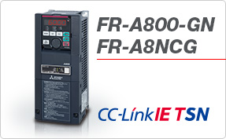
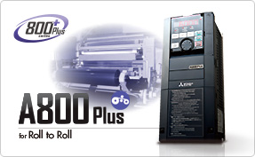
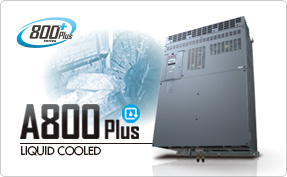
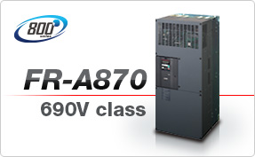
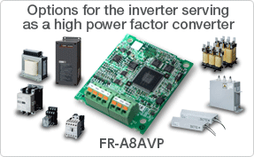

Inverters-FREQROL Produk yang direkomendasikan


Peluncuran Inverter FR-A800-GN dan Opsi Plug-in FR-A8NCG untuk Fungsi Komunikasi CC-Link IE TSN

Inverter dengan fungsi komunikasi CC-Link IE TSN telah ditambahkan ke seri FR-A800. Opsi plug-in FR-A8NCG untuk digunakan dengan inverter standar seri FR-A800 dan FR-F800 juga tersedia.
Peluncuran Inverter FR-A800-E-R2R (Model Komunikasi Ethernet dari inverter khusus roll to roll)

Model komunikasi Ethernet ditambahkan ke inverter FR-A800-R2R.
Peluncuran Model Komunikasi Ethernet Inverter Tipe Pendingin Cair FR-A800-E-LC

Model komunikasi Ethernet ditambahkan ke inverter FR-A800-LC.
Model Baru Ditambahkan ke FR-A800 Series dengan Fungsionalitas Tinggi dan Performa Tinggi

Model transistor rem terintegrasi telah ditambahkan ke jajaran FR-A870.
Penambahan opsi untuk FR-A842 Berfungsi sebagai Konverter Faktor Daya Tinggi

Opsi plug-in FR-A8AVP dan opsi mandiri FR-A8VPB-H, FR-A8BL1, FR-A8BL2, FR-A8BC, dan FR-A8MC kini tersedia sebagai tambahan baru pada jajaran opsi inverter seri FR-A800. Penambahan opsi ini memungkinkan kapasitas 315K hingga 500K.